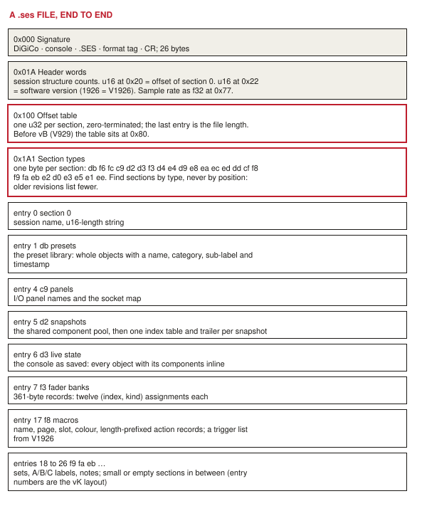
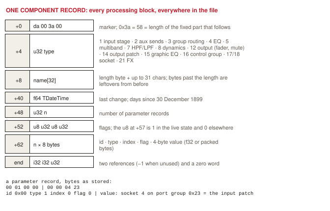
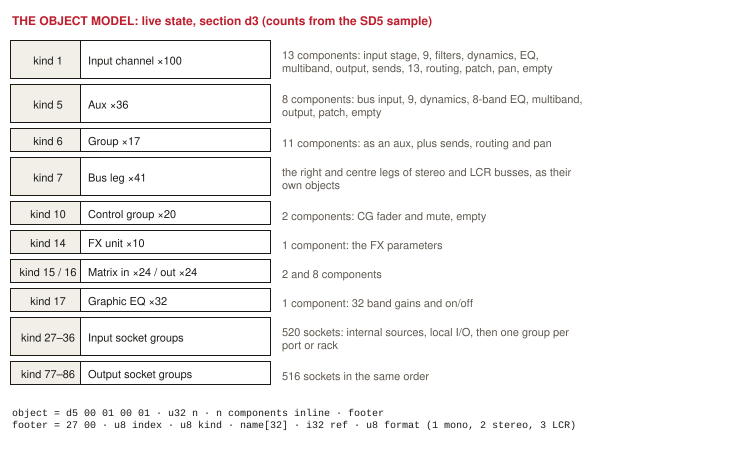
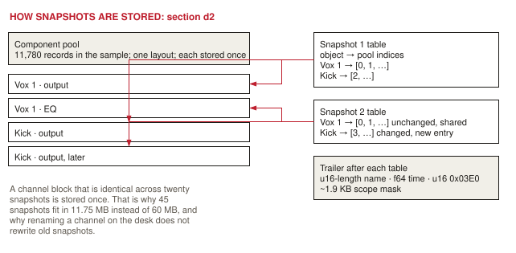
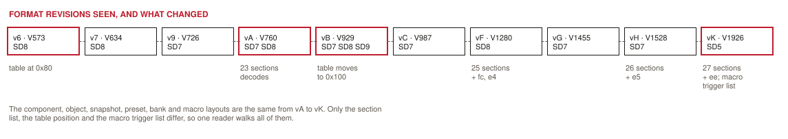

Format · the .ses session file
How a session file goes together.
Worked out from 135 session files written by SD5, SD7, SD8 and SD9 consoles between 2013 and 2025, software V760 to V1926. Nothing here comes from DiGiCo. Every claim in the notes carries how it was learnt and how sure it is; the structure is read from files, the meaning of parameters is inferred and still to be checked in the offline software.
1. The shape of the file
Plain binary. No compression, no container, no checksum found. Length-prefixed strings and dates counted from 30 December 1899 as doubles, which is how an Object Pascal program writes its records. A 26-byte signature names the maker, the console, the file type and a format revision letter; a table of offsets points at the sections; a list of type bytes says what each section is.

2. Header
| Offset | Field | Reading |
|---|---|---|
| 0x00 | DiGiCo SD5 .SES vK \r | maker, console at 0x0B, file type, format tag at 0x14 |
| 0x20 | u16 | offset of section 0; also the first entry of the offset table, which is how the table is found |
| 0x22 | u16 | the software version that wrote the file: 760, 929, 987, 1280, 1455, 1528, 1926 seen, each paired with one format tag |
| 0x26 | u16 | input channel count (100 in the SD5 sample) |
| 0x77 / 0x5F | f32 | sample rate; at 0x5F when the table is at 0x80 |
| 0x100 / 0x80 | u32 × n, 0 | section offsets; the last equals the file length |
| table + 0xA1 | u8 × (n − 1) | section types: 23 in vA–vC, 25 in vF–vG, 26 in vH, 27 in vK |
3. The component record
Every processing block on every channel, bus, socket, FX unit and graphic EQ is one record with one layout, in the live state, in the presets and in the snapshot pool. 17,567 of them in the SD5 sample, 3,000 to 12,000 in the others, all walking the same way.

Parameters identified so far, all inferred from values: type 12 carries the fader (0x21, dB, −150 off) and mute (0x22); type 7 the HPF and LPF (0x03 on, 0x05 Hz, index 1 for the high-pass); type 4 the EQ bands (0x04 on, 0x05 Hz, 0x06 Q, 0x07 gain); type 8 two dynamics modules (0x01 threshold, 0xE1 ratio); type 2 one send per aux (0x01 level, 0x02 on); type 3 one flag per group; type 1 the input patch as 00 00 socket group. The full table is in components.md.
4. Objects and the live state
Section d3 is the console as it was saved: one object per channel, bus, socket, FX unit and graphic EQ, each with its components inline and a footer that gives the object's index within its kind, the kind, the name, and the format. The kind numbers are the same ones used by fader bank entries, input patch values and preset objects, which is what makes references inside the file resolvable.

5. Snapshots
Snapshots are not copies of the console. Section d2 holds one pool of components, then one table per snapshot that points into the pool by index, then a trailer with the name, the time it was stored and a scope mask.

6. Fader banks, macros, presets
Fader banks are 361-byte records: a 16-character name, twelve (index, kind) assignments that resolve to objects, a second label and a colour. Macros are a 32-character name, a page, a slot, a colour, then length-prefixed action records; from V1926 a second, usually empty, list follows, which is where the macro triggers that release added most likely live. Presets are whole objects (two for a stereo preset, one per leg) followed by a name, a category, a sub-label and a timestamp.
7. Format revisions
The tag at 0x14 and the version at 0x22 move together. Across the archive the record layouts have not changed since at least V760: new features add sections or append to records.

8. What is not known
- Whether the file carries a checksum. Rename one channel with the reader, open it in the offline software.
- Whether the inferred parameter meanings are right. Set one fader, one send and one HPF to known values, save, diff.
- Where the snapshot cue numbers are stored.
- How the output patch is encoded (component type 14, parameter fe).
- What the u16 0x03E0 after every snapshot timestamp is, and what the four 72-byte rows before the first table hold.